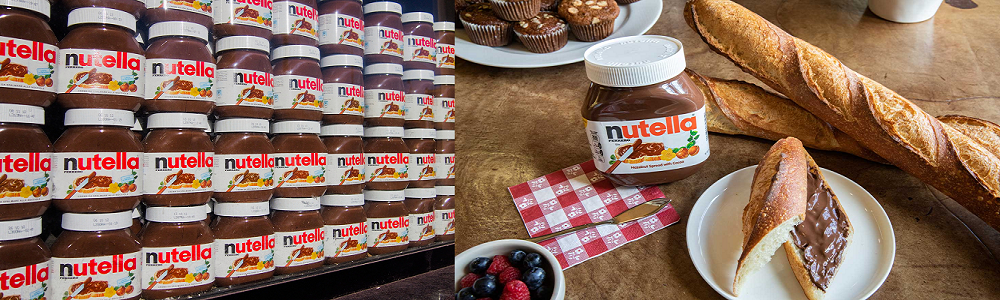

8.3 Contingency plan:
This plan is designed to take account of a possible future event or circumstance.
PHASE 1: This phase consist of import of spread from USA to Canada.This will save capital investment which will help in managing order where orders estimation would be easily made.In the case of campaign failure with a fullwarehouse thecompany will adopt a damage control policy where the products will be sold at a lowerprice($1) and distributed at lower standard off license stores,inorder to minimize losses.
PHASE 2: After success of phase one,the next will be to start the production of Nutella Hazelnut Spread with various selection offlavours locally in country. The implementation of this phase means that the product proved successful inphase one which all that the brand will successfully establish.Incase of failure in this second phase we will plan to implement many other alternative strategies. The first and foremost will be to focus the original product made of hazelnut coco flavors that has already proved successful and returning to make a more detailed market research on what flavours would workbest for the market.Another strategy to be studied and put into action is the concentration on markets which are near to this place.

Fig8: From grocery store to breakfast table